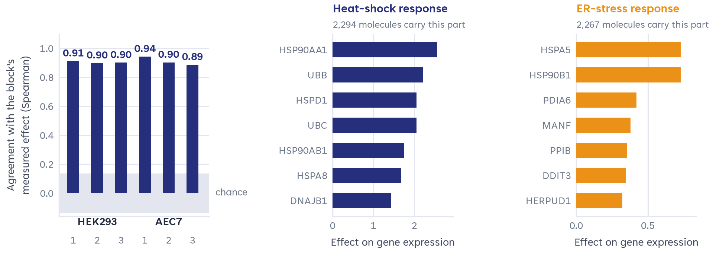
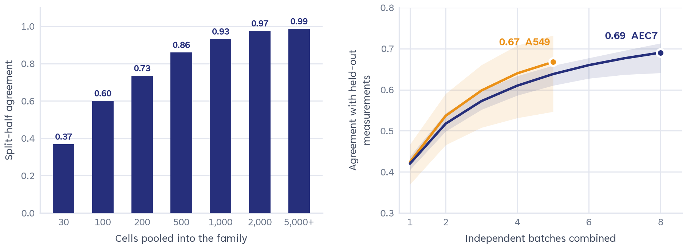
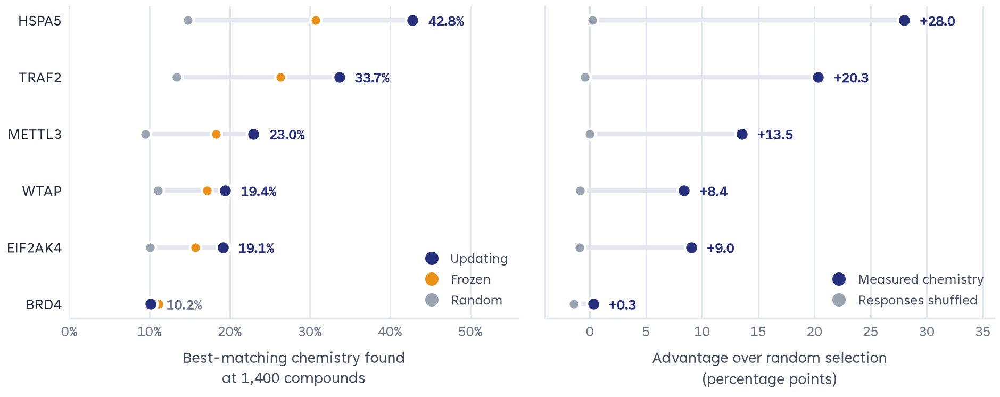

Z-Screen: Combinatorial Perturbation Transcriptomics, Model Benchmarking and Multi-Atlas Phenomimicry
How a readable chemical grammar, same-well multimodal nanowell measurement and calibrated chemical–genetic phenomimicry turn whole-transcriptome screening into an engine for therapeutic discovery
What this paper shows
Z-Screen is Zafrens’ nanowell screening platform. It pairs combinatorial small-molecule synthesis from reusable building blocks with whole-transcriptome and high-content imaging readouts, at up to 50,000 conditions per run and a company operating specification below $2 per condition.
This white paper analyzes the Z-Screen pilot dataset released as Package V2 (ZScreen_Pilot_Package_v2.0.0): 162,914 unique compounds assembled from 627 recurring building blocks, profiled as 190,699 compound–context transcriptional profiles across eight library–cell contexts, plus an 11,435-nanowell ActiveSeq same-well imaging-and-RNA co-assay. The pilot is a sample of what the platform measures, not its ceiling: Z-Screen is designed to scale to millions, and potentially hundreds of millions, of compounds.
Five workstreams are reported, each with its saved evidence tables:
- Platform and combinatorial grammar. Cellular responses decompose by building block: computationally removing one block from a trained model reproduces its measured effect at median Spearman r = 0.89–0.94, and fragment-level weights rebuild whole-block effects at r = 0.97–0.99.
- ActiveSeq same-well co-assay. Morphology and RNA measured inside the same nanowell agree globally (Mantel r = 0.773) and the exact well link carries information that shuffled pairings lose (0.109 versus −0.001 held-out correlation).
- Model benchmarking. Simple recipe models and a reference transformer split the eight contexts four to four. On unseen building blocks the additive recipe model edges Chemprop. On public SciPlex3, a Z-Screen-pretrained conditional Chemprop reaches DE50 response r = 0.593, above released chemCPA (0.429) and scBalFlow (0.338); a scratch run stopped at the same epoch count shows that part of the gain over the standard scratch run reflects training duration.
- Chemical twins. Calibrated cross-atlas matching against LINCS L1000, Tahoe-100M and CIGS recovers reference controls (median panel rank 0.822 on 17 qualified controls) and yields 110 qualifying series–reference matches across 51 series.
- Genetic twins. Bridging to 43 Perturb-seq signature sets (~18,800 targets) yields 2,626 strict series–knockout matches in 178 disjoint program clusters, with zero synthetic false discoveries at FDR < 0.05.
A high-throughput language connecting chemical parts to cellular states
Recurring chemical parts and rich cellular readouts let Z-Screen learn how specific substitutions change biological responses.
1.1 The Z-Screen platform
The Z-Screen microfluidic platform compartmentalizes 2 to 10 intact human cells per polydimethylsiloxane (PDMS) nanowell across arrays of up to 50,000 conditions per run. Whole-transcriptome mRNA is captured on barcoded beads, with high-content imaging acquired either across library runs or inside the exact same well through the ActiveSeq co-assay (Section 2). Company operating specifications are below $2 per condition and up to 50,000 wells per run; these are platform specifications rather than audited cost-per-successful-profile measurements.
Whether operating in sequencing mode, imaging mode, or conditionally paired library imaging and sequencing, the platform is called Z-Screen. The term ActiveSeq is reserved for experiments in which high-content imaging and RNA sequencing occur inside the same nanowell.
1.2 The pilot dataset analyzed here
In the public Package V2 release, raw sequencing reads across 46,944 human genes are depth-normalized, background-adjusted with the documented context-specific baseline, harmonized onto a 6,000-gene high-variance expression surface, and projected onto a pinned k = 32 semi-nonnegative matrix factorization (semi-NMF) transcriptional program basis (W ∈ ℝ32×6000). Across four combinatorial libraries (ZEL024, ZEL028, ZEL031, ZEL039) and five human cell lines (HEK293, H1650, A549, THP1 and AEC7 endothelial cells), the pilot dataset comprises 190,699 compound–context profiles spanning 162,914 unique compounds assembled from 627 active positional building blocks (bb0–bb4).
1.3 Substructure modularity: cells read individual chemical parts
Unlike diversity libraries in which every molecule is an isolated scaffold, Z-Screen’s combinatorial design means the median building block is observed across 461 distinct molecules, and even a molecule’s least-common synthon appears in roughly 1,100 other library members. Across the corpus, 5,077,542 measured compound pairs differ by a single positional building-block substitution (207,956 pairs where both compounds sit in the held-out test fold). The building blocks define 722,397 unique chemical recipes and 2,079,661 nominal compound–context states across 104,385 Bemis–Murcko scaffolds, so the 190,699 measured profiles sample roughly 9.2% of the nominal combinatorial grid.
Cellular transcriptional responses respect this chemical grammar. Computationally knocking out a single building block from a trained model’s input reproduces that block’s empirical marginal effect in cells at a median Spearman r = 0.89 to 0.94 across the two most deeply measured contexts (zel024_hek293 and zel039_aec7, three splits each; z = 13.8 to 19.2 against a shuffled-label null near zero). Decomposing each building block into Morgan substructures and summing the learned fragment weights reconstructs the whole block’s cellular effect at r = 0.97 to 0.99.

Coupling morphology and transcriptomics inside the same nanowell
Across the broader Z-Screen corpus, 33,575 library compounds have conditionally paired high-content imaging and transcriptomics (ZEL024: 10,129 compounds; ZEL031: 8,443; ZEL039: 15,003), with 448 CellProfiler morphological features per condition.
To test whether single-well morphological variation co-varies with transcriptional program usage inside the same cells, without batch or well-to-well confounding, a dedicated 11,435-nanowell ActiveSeq study imaged each nanowell across brightfield and fluorescence channels immediately before lysis and barcoded mRNA capture, across 35 pharmacological control compounds.
- Global cross-modality geometry. Across the 35-control panel, pairwise distances in the 448-feature morphology space correlate with distances in the 32-program RNA space at Mantel r = 0.773 (exact permutation p = 1/2,001 = 0.0005).
- The exact well link carries information. On 2,287 held-out ActiveSeq wells evaluated across 72 models, preserving the nanowell link between image and RNA yields a QC-adjusted within-treatment image-to-RNA correlation of 0.109; breaking the link within the same compound and batch collapses it to −0.001. Real pairs beat broken pairs in 35 of 35 compound averages and 64 of 70 compound-by-batch strata.
- Population-level recognition. After pooling 32 held-out wells per treatment, joint image-plus-RNA classification exceeds RNA alone by +2.86 percentage points (batch 1 → 2) and +10.48 points (batch 2 → 1). Single-well classification shows no consistent gain; the pooled result is a post-fit aggregation under a fixed classifier, not a learned fusion model.

zel039_aec7), split-half correlation between disjoint halves of a family’s members rises from 0.37 (30–99 pooled cells) to 0.99 (more than 5,000 pooled cells; Spearman r = 0.882). Right: combining independent acquisition batches of control compounds raises gene-level agreement with held-out batches from 0.420 (1 batch) to 0.690 (8 batches) in AEC7 and from 0.424 to 0.668 in A549, in 20 of 20 partitions.Where Z-Screen representations add predictive power, and where they do not
Two internally generated benchmarking workstreams evaluated within-library generalization, cold-start chemistry, active learning, and transfer to public datasets. Each comparison below reports the saved test set it was scored on.
3.1 Within-library generalization on the released fold-0 split
In the released fold-0 benchmark, the reference transformer wins four of eight contexts and simple recipe models win the other four. Simple winners include additive building-block marginals and slot-embedding ridge regression. HEK293/ZEL024 reaches transformer r = 0.582; AEC7/ZEL039 favors slot-embedding ridge at r = 0.451.
evidence/fold0_reference_model_summary.csv.| Context | Test profiles | Best simple model | Simple r | Transformer r | Winner |
|---|---|---|---|---|---|
| ZEL024 · H1650 | 2,175 | additive BB marginals | 0.212 | 0.242 | transformer |
| ZEL024 · HEK293 | 2,811 | additive BB marginals | 0.501 | 0.582 | transformer |
| ZEL028 · A549 | 8,242 | slot-embedding ridge | 0.133 | 0.106 | simple |
| ZEL028 · H1650 | 5,258 | slot-embedding ridge | 0.099 | 0.114 | transformer |
| ZEL028 · HEK293 | 12,469 | slot-embedding ridge | 0.192 | 0.146 | simple |
| ZEL031 · A549 | 1,678 | additive BB marginals | 0.202 | 0.144 | simple |
| ZEL031 · THP1 | 1,804 | additive BB marginals | 0.305 | 0.323 | transformer |
| ZEL039 · AEC7 | 4,215 | slot-embedding ridge | 0.451 | 0.336 | simple |
3.2 Cold-start chemistry and active learning
A central question for medicinal chemistry is what happens when a candidate incorporates a building block the model has never seen (the bb_disjoint split). In a head-to-head benchmark on zel024_hek293 fold 0 (n = 7,544 held-out molecules with unseen building blocks), an additive recipe model was compared with an end-to-end message-passing graph neural network (Chemprop v2.3.1 D-MPNN) and with Z-Screen’s shared-context transformer.
- Unseen building blocks. On the same 7,544 compounds, the additive recipe model reaches mean program r = 0.363, R² = 0.109 and 2.62× directional enrichment at a 5% selection budget, versus Chemprop at 0.337, 0.089 and 2.53×. Both use 5,721 training and 649 validation profiles. The three-seed shared-context transformer reaches r = 0.398 and 2.86× enrichment using eight contexts, but its mean program R² is −0.99: ranking improves while effect-size calibration worsens.
- Pretrained graph features generalize. Across all 8 contexts × 5 folds under strict
bb_disjointpartitioning, frozen CheMeleon-2048 graph features (8-context mean r = 0.264, up to 0.408) outperform Morgan-2048 fingerprints (mean r = 0.242) in 40 of 40 splits. Adding Z-Screen recipe coordinates to frozen CheMeleon further improves top-5% selection enrichment in 8 of 8 contexts (up to 4.54×). - Retrospective active learning. Across five of six objectives, model-directed selection matched the response recovery of 1,400 random measurements using 667–933 selections: 33–52% fewer measurements. HSPA5 recovery reached 42.8%, versus 30.7% for a frozen model and 14.8% for random selection. These replays use previously measured compounds; prospective campaigns will test the laboratory savings.
evidence/cold_start_metrics.csv, evidence/sciplex_results.txt, evidence/sciplex_followup_controls.json.
3.3 External public benchmarks: SciPlex3, NeurIPS 2023 PBMCs and TDC ADMET
All 83 held-out SciPlex3 drug–dose–cell conditions (nine unseen drugs across MCF7, K562 and A549; 18,697 measured cells) are scored on the same 2,000-gene axis with equal condition weights, in the official 2,000-HVG and top-50 differentially expressed (DE50) gene spaces. Released scBalFlow and chemCPA predictions are actual inference from their published checkpoints; the conditional Chemprop arms share identical public supervision and three paired seeds.
| Model | All-gene R² | All-gene Δr | DE50 R² | DE50 Δr | DE50 RMSE |
|---|---|---|---|---|---|
| Released scBalFlow (public checkpoint) | 0.692 | 0.280 | 0.617 | 0.338 | 0.236 |
| Released chemCPA (public checkpoint) | 0.829 | 0.278 | 0.767 | 0.429 | 0.199 |
| Conditional Chemprop, public SciPlex3 only (scratch, 58 epochs) | 0.860 | 0.388 | 0.798 | 0.449 | 0.181 |
| Conditional Chemprop, Z-Screen pretrained (7 epochs) | 0.865 | 0.476 | 0.811 | 0.593 | 0.177 |
| Conditional Chemprop, scratch at 7 epochs (training-duration control) | 0.853 | 0.490 | 0.794 | 0.618 | 0.184 |
| Z-Screen A549 64-d chemistry-derived features + supervised MLP | 0.876 | — | 0.820 | — | — |
De-orphaning combinatorial chemistry against LINCS, Tahoe-100M and CIGS
An uncharacterized compound that induces the same signed transcriptional state as a validated drug, and whose structural analogs preserve that match across a chemical series, provides an immediate, testable mechanism-of-action hypothesis. We call such a match a chemical twin.
4.1 Baseline calibration and scoring
Cross-atlas matching compares signed transcriptional responses between platforms that were never designed to be compared, so three calibration choices determine whether pharmacological concordance is visible above noise:
- Signed contrastive projections. Up- and down-regulated genes are scored with their signs preserved. Averaging unsigned ranks across the top-|z| genes would cancel a perfect phenomimic (up-regulated genes at the 95th percentile, down-regulated genes at the 5th) to an uninformative 50%.
- Vehicle-based centering. The internal control panel (ZIC008) is 90.7% active oncology, kinase and epigenetic drugs (35 drugs versus 4 vehicle sets). Log2 fold changes and robust z-scores are therefore computed from raw UMI counts against 72 pure DMSO vehicle wells, or against the more-than-10,000-compound library median/MAD, rather than against the active-dominated panel mean, which would subtract the shared antiproliferative and cell-cycle pathways that carry much of the signal.
- Plate-level standardization of CIGS. Plate-based robust median/MAD standardization doubles CIGS replicate cosine (0.088 → 0.168). The analysis uses 3,261 exactly shared genes; the active reference panel contains 1,940 compounds.
4.2 Library-wide chemical-twin discovery: 110 matches across 51 series
Using a five-channel similarity ensemble coupled with bipartite mutual specificity (Zmutual), well-count-stratified empirical permutation nulls (B = 2,000), Benjamini–Hochberg FDR q < 0.01, and at least one qualifying orthogonal support channel, 110 qualifying (series, reference) matches were identified across 51 chemical series (47 distinct variable cores). Of these, 33 have both internal-control and CRISPR support, including all ten prioritized programs (ZS-SAR-01 to ZS-SAR-10).
| Program | Context · variable core | Size / actives | External twin (CIGS) | Zemp (FDR q) | Internal control | Same-MOA CRISPR KO |
|---|---|---|---|---|---|---|
| ZS-SAR-01 | A549 · ZEL028BB_2172915349 (+BB_3460866978) | 132 / 15 (0 mw) | RoniciclibCDK4/6/7/9 kinase | 7.15 (1.6e−8) | Palbociclib Z = +5.14 | CDK9 KO Z = +5.27 |
| ZS-SAR-02 | A549 · ZEL031BB_3103020399 | 83 / 14 (13 mw) | EndoxifenER/AR nuclear receptor | 5.75 (1.1e−8) | Endoxifen Z = +6.40 | AR KO Z = +6.43 |
| ZS-SAR-03 | H1650 · ZEL028BB_3467217614 | 213 / 11 (0 mw) | CeritinibALK/MET/IGF1R RTK | 5.97 (8.4e−6) | AZD-3463 Z = +6.26 | ALK KO Z = +3.56 |
| ZS-SAR-04 | THP1 · ZEL031BB_3717371053 | 87 / 5 (3 mw) | AZD5153BRD4/BET reader | 4.90 (8.4e−5) | MZ1 Z = +4.10 | BRD2 KO Z = +3.49 |
| ZS-SAR-05 | H1650 · ZEL024BB_5272889191 | 131 / 29 (11 mw) | HTH-01-015NUAK1/ROCK kinase | 7.79 (7.9e−9) | HTH-01-015 Z = +2.08 | NUAK1 KO Z = +3.11 |
| ZS-SAR-06 | H1650 · ZEL028BB_8596154155 | 223 / 15 (0 mw) | GSK3368715type I PRMT inhibitor | 4.97 (7.3e−4) | STM2457 Z = +3.58 | EZH2 KO Z = +4.28 |
| ZS-SAR-07 | AEC7 · ZEL039BB_0302650651 & BB_7334588199 | 37 / 5 (1 mw) | LY2857785CDK9/7 elongation | 3.94 (6.1e−9) | Palbociclib Z = +4.16 | CDK9 KO Z = +6.70 |
| ZS-SAR-08 | A549 · ZEL031BB_5574910360 | 88 / 17 (16 mw) | AilanthoneAR/ER chaperone axis | 5.63 (2.5e−8) | Endoxifen Z = +6.70 | AR KO Z = +6.83 |
| ZS-SAR-09 | H1650 · ZEL024BB_3472530680 & BB_2122574568 | 76 / 17 (17 mw) | ZM 336372RAF/MEK/MAPK | 4.34 (6.9e−5) | ZM 336372 Z = +2.96 | MAP2K1 KO Z = +3.99 |
| ZS-SAR-10 | H1650 · ZEL024BB_7372899989 & BB_8873714086 | 136 / 23 (20 mw) | ZM 336372RAF/MEK/MAPK | 4.45 (5.5e−5) | Sorafenib Z = +2.51 | RAF1 KO Z = +4.49 |
evidence/chemical_leads.csv.Bridging chemical profiles to 43 Perturb-seq signature sets and ~18,800 genes
Small-molecule phenomimicry is bounded by targets that already have tool compounds. Bridging Z-Screen directly to genome-wide CRISPR Perturb-seq extends chemical search to genetic reference responses beyond existing tool compounds.
5.1 Reference harmonization and scoring calibration
We harmonized 43 Perturb-seq signature sets (about 18,800 target genes and 8 million single cells, drawn from X-Atlas Orion 2025 HEK293T and HCT116; Replogle et al., Cell 2022, K562 and RPE1; Nadig et al., Nature Genetics 2025, HepG2 and Jurkat; Jiang et al., Nature Biotechnology 2025, 30 cytokine-by-cell matrices; Zhu et al., primary human CD4+ T cells; and the 2025 Virtual Cell Challenge) and constructed a 1,225-target multi-atlas reference panel (1,068 verified multi-atlas knockdowns with target-gene z ≤ −1.0, 132 priority therapeutic targets, and 25 obligate multiprotein complexes).
Perturb-seq pseudobulks across 25,000 genes are sparse: roughly 45% of genes have a median absolute deviation of zero, so an unfloored z-score lets a handful of sparse genes dominate cosine similarity. Scoring methods were therefore calibrated on 25 matched Tier-1 intracellular compounds across genome-wide and essential-gene reference datasets, using the compound-median rank of each compound’s direct target (0.5 = chance). A naive unfloored cosine scores 0.485. Enforcing a positive MAD floor with a pure-vehicle baseline raises the median to 0.541 (paired median change +0.087, p = 0.045), and the selected method, an unblended control-contrast bimodal Zmutual ensemble, reaches 0.580 (p = 0.043). The 1,225-entry consensus panel is then used for library discovery.
evidence/crispr_calibration.csv.5.2 Genome-wide CRISPR-SAR discoveries and chemical–genetic convergence
Evaluating 55,227,900 (series, target) pairs against well-count- and magnitude-stratified empirical nulls, with a synthetic negative-control pass yielding zero false discoveries at FDR < 0.05 across all eight contexts, identified 2,626 strict-gate (series, CRISPR knockout) discoveries across 293 family identifiers, 251 core building blocks and 178 disjoint chemical program clusters, with 2,229 (84.9%) passing the decoupled lineage-support gate. Cross-referencing against 4,102 pre-staged chemical-twin pairs produced 168 Tier 1 (exact direct target), 138 Tier 2 (obligate physical complex) and 455 Tier 3 (broad pathway) convergent rows.
| Rank · context | Core variable block | Primary CRISPR target (partner) | Zmag (FDR q) | Disc → Holdout Z | Cliff Tanimoto · chemical twin (tier) |
|---|---|---|---|---|---|
| #1 · A549 · ZEL031 | bb0 = BB_3717371053N = 87, 33 mw | BRD2partner ELL2, Zcorr = 2.67 | 16.37 (4.2e−27) | 18.46 → 9.20 | 0.873 · dBET6 / AZD5153 (Tier 1 exact) |
| #2 · AEC7 · ZEL039 | bb1 = BB_0164651813(+BB_2085420374) N = 51, 15 mw | PSMA3partner PSMB5, Zcorr = 7.94 | 10.70 (8.8e−14) | 9.82 → 9.76 | 0.875 · Ixazomib citrate (Tier 2 complex) |
| #3 · HEK293 · ZEL024 | bb3 = BB_6048600856N = 167, 12 mw | ATR / CHEK1 / WEE1ATR Z = 7.94 | 11.12 (2.6e−20) | 7.03 → 13.36 | 0.912 · Prexasertib / AZD-7762 (Tier 2) |
| #4 · A549 · ZEL031 | bb0 = BB_7209113661N = 87, 13 mw | ACTL6A / BAF53ASWI/SNF | 11.86 (6.7e−22) | 8.09 → 8.94 | 0.868 · dBET6 / AZD5153 (Tier 3 pathway) |
| #5 · HEK293 · ZEL024 | bb3 = BB_1193003673(+BB_5290020531) N = 84, 12 mw | TYK2partner STAT5B, Zcorr = 2.91 | 6.61 (1.3e−10) | 3.74 → 4.06 | 0.800 · Ilginatinib, JAK–STAT (Tier 3) |
| #6 · AEC7 · ZEL039 | bb0 = BB_1722497045 & bb1 = BB_4318016053N = 35, 5 mw | CDK9partner SUPT5H, Zcorr = 7.85 | 4.18 (6.8e−11) | 3.96 → 3.51 | 0.808 · Dinaciclib, CDK9 (Tier 1 exact) |
| #7 · A549 · ZEL031 | bb1 = BB_4729940582N = 82, 4 mw | RPL28partner ATF4, Zcorr = 1.81 | 5.30 (4.1e−5) | 3.10 → 5.12 | 0.847 · Anisomycin, ribosome/ISR (Tier 1) |
| #8 · THP1 · ZEL031 | bb1 = BB_9265511036N = 112, 3 mw | PLK1 / AURKA/B / CDK1CDK1 Z = 5.04 | 6.07 (3.2e−4) | 7.46 → 2.66 | 0.976 · SCH-1473759, mitotic (Tier 3) |
| #9 · H1650 · ZEL024 | bb3 = BB_9434530945N = 136, 9 mw | METTL3 / METTL14 / WTAPm6A writer | 4.58 (2.7e−3) | 4.20 → 4.47 | 0.821 · epigenetic / RNA methyltransferase (Tier 3) |
| #10 · THP1 · ZEL031 | bb0 = BB_8117313079N = 70, 4 mw | TOP1topoisomerase I | 4.50 (1.3e−4) | 5.49 → 2.32 | 0.587 · Daunorubicin, DNA-damage pathway (Tier 3) |
evidence/genetic_members.csv.Twenty chemical programs for experimental triage
The two discovery tracks contribute 20 prioritized entries with shared chemistry across tracks: the BET-associated core BB_3717371053 appears in both. These are starting points for focused experimental programs, not validated leads.
6.1 Replication status
All ten genetic-twin programs have at least three multi-well active analogs and pass the lineage-score gate. The chemical-twin series vary: ZS-SAR-01, -03 and -06 have no multi-well active analog and ZS-SAR-07 has one, so those four series should be rescreened before any target assay. Exported maximum active–cliff Tanimoto similarities span 0.449–0.917 for chemical leads and 0.587–0.976 for genetic leads; higher values mean the inactive control is a closer structural neighbor of the active compound and therefore a sharper cliff.
| Program | Track | Context · reference | Family size | Active | Multi-well active | Max cliff Tanimoto | Status |
|---|---|---|---|---|---|---|---|
| ZS-SAR-01 | chemical twin | A549 · ZEL028Roniciclib | 132 | 15 | 0 | 0.570 | rescreen first |
| ZS-SAR-02 | chemical twin | A549 · ZEL031Endoxifen | 83 | 14 | 13 | 0.481 | ready for target assay |
| ZS-SAR-03 | chemical twin | H1650 · ZEL028Ceritinib dihydrochloride | 213 | 11 | 0 | 0.584 | rescreen first |
| ZS-SAR-04 | chemical twin | THP1 · ZEL031AZD5153 | 87 | 5 | 3 | 0.701 | ready for target assay |
| ZS-SAR-05 | chemical twin | H1650 · ZEL024HTH-01-015 | 131 | 29 | 11 | 0.901 | ready for target assay |
| ZS-SAR-06 | chemical twin | H1650 · ZEL028GSK3368715 | 223 | 15 | 0 | 0.576 | rescreen first |
| ZS-SAR-07 | chemical twin | AEC7 · ZEL039LY2857785 | 37 | 5 | 1 | 0.907 | rescreen first |
| ZS-SAR-08 | chemical twin | A549 · ZEL031Ailanthone | 88 | 17 | 16 | 0.449 | ready for target assay |
| ZS-SAR-09 | chemical twin | H1650 · ZEL024ZM 336372 | 76 | 17 | 17 | 0.917 | ready for target assay |
| ZS-SAR-10 | chemical twin | H1650 · ZEL024ZM 336372 | 136 | 23 | 20 | 0.791 | ready for target assay |
| CRISPR-SAR #1 | genetic twin | A549 · ZEL031BRD2 | 87 | 34 | 33 | 0.873 | ready for target assay |
| CRISPR-SAR #2 | genetic twin | AEC7 · ZEL039PSMA3 | 51 | 15 | 15 | 0.875 | ready for target assay |
| CRISPR-SAR #3 | genetic twin | HEK293 · ZEL024DDR / ReplicationStress / ATR / CHEK1 / WEE1 | 167 | 12 | 12 | 0.912 | ready for target assay |
| CRISPR-SAR #4 | genetic twin | A549 · ZEL031ACTL6A | 87 | 13 | 13 | 0.868 | ready for target assay |
| CRISPR-SAR #5 | genetic twin | HEK293 · ZEL024TYK2 | 84 | 12 | 12 | 0.800 | ready for target assay |
| CRISPR-SAR #6 | genetic twin | AEC7 · ZEL039CDK9 | 35 | 6 | 5 | 0.808 | ready for target assay |
| CRISPR-SAR #7 | genetic twin | A549 · ZEL031RPL28 | 82 | 4 | 4 | 0.847 | ready for target assay |
| CRISPR-SAR #8 | genetic twin | THP1 · ZEL031MitoticSpindle / PLK1 / AURKA / AURKB / CDK1 | 112 | 6 | 3 | 0.976 | ready for target assay |
| CRISPR-SAR #9 | genetic twin | H1650 · ZEL024m6A / Writer / METTL3 / METTL14 / WTAP | 136 | 17 | 9 | 0.821 | ready for target assay |
| CRISPR-SAR #10 | genetic twin | THP1 · ZEL031TOP1 | 70 | 5 | 4 | 0.587 | ready for target assay |
6.2 Proposed confirmation experiments
Transcriptional phenomimicry generates mechanism hypotheses; it does not prove binding. For each program the proposed follow-up is, in order: fresh dose–response measurement of active and inactive-cliff compounds side by side; a direct target assay matched to the mechanism axis (for example TR-FRET or NanoBRET binding, ADP-Glo or radiometric kinase activity, proteasome chymotrypsin-like activity, or MTase-Glo methyltransferase activity); a proximal cellular readout (for example phospho-flow or western blot of the pathway node, MYC repression for BET programs, or m6A/A quantification for the METTL3 program); and a genetic perturbation experiment in which knockout or rescue of the nominated target shifts the compound’s transcriptional response. A measured false-positive rate requires known experimental positives and negatives and is a deliverable of these experiments, not of this paper.
Reading the evidence with the intended precision
- Pilot dataset versus platform. Counts in this paper (162,914 compounds, 190,699 profiles, 627 building blocks) describe the released pilot package. They are not platform limits.
- Phenomimicry versus target engagement. Transcriptional phenomimicry measures alignment of cellular state directions. It is a calibrated mechanism-of-action hypothesis generator, not proof of direct physical binding, enzymatic IC50 or target selectivity.
- Evaluation units and overlapping series. A three-slot molecule belongs to up to three one-slot series and three two-slot series, so overlapping series are not independent samples. Headline counts report both total qualifying series and strictly disjoint program clusters (178 disjoint CRISPR-SAR clusters; 10 prioritized entries per modality, with overlap between modalities).
- Calibration metrics and affine R². Internal R² on
zel024_hek293(0.493) incorporates a post-hoc linear affine calibration fitted on validation predictions. External SciPlex3 R² and Δr are evaluated directly in the official 2,000-HVG and DE50 gene spaces without target leakage. - Selected-set statistics. The 84.9% lineage-support fraction is computed after selection with an OR gate that includes holdout support. The CIGS 0.822 median is a matched-panel rank on 17 qualified controls. Neither is a prospective replication rate.
- Public edition. Chemical structure images and SMILES/scaffold fields are withheld. Tables retain compound identifiers and measured results. Download hashes refer to the sanitized files; source hashes are recorded separately in
evidence/provenance.json.
Evidence register
| File | What it supports |
|---|---|
platform_counts.json | Pilot-dataset scale: compounds, profiles, contexts, programs, gene panel |
fold0_reference_model_summary.csv | Exact per-context simple-model and transformer results (Table 1) |
cold_start_metrics.csv | Unseen-building-block head-to-head on 7,544 HEK293 compounds |
sciplex_results.txt, sciplex_followup_controls.json | Public SciPlex3 comparison, metric definitions, and the epoch-matched and weight-shuffled controls (Table 2) |
replay_savings.csv | Retrospective active-learning measurement savings |
activeseq_treatment_results.txt | ActiveSeq treatment-recognition and population-pooling results |
cigs_qualified.csv, cigs_calibration.csv | CIGS qualified-control panel metrics and full-atlas calibration |
chemical_leads.csv, chemical_qualified.csv | Ten chemical-twin leads and the 110 qualifying matches |
crispr_calibration.csv | Compound-level and evaluation-row CRISPR calibration |
genetic_leads.csv, genetic_members.csv | Ten genetic-twin leads and their measured active and inactive analogs |
provenance.json | Source paths and SHA-256 hashes for every released table |